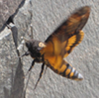

Tämä on teksti kappale, tag on p, tulee sanasta paragraph
Toinen kappale jättää selvän välin edelliseen,
rivinvaihdon voi tehdä tagilla br, tulee sanasta break
Tavallisen listan alkutagi on ul
Numeroidun listan tag on ol
Käytä koko URL:ää
Linkki alkaa tagilla a (anchor), href kertoo, mihin linkki vie.
Tagien väliin tulee se teksti, jonka lukija näkee. Jos haluat
avata sivu toiselle välilehdelle, lisää target-attribuutti ja anna sen arvoksi _blank
Linkit suhteellisina viittauksina
Jos sivu on samassa kansiossa, voit viitata siihen
suoraan sen nimellä, esim. a href ="sivu2.html"
Jos sivu on alikansiossa, viitataan polulla alikansioon, esim a href ="./alikansio/sivu2.html
Jos sivu on rinnakkaisessa kansiossa, polkuun tulee alkuun viittaus ylöspäin, esim. a href ="./sivukansio/sivu3.html
Kuva lisätään tagilla img. Pakollinen attribuutti on alt,
(alternative) johon kirjoitetaan vaihtoehto, jos kuva ei toimi.
Toinen pakollinen on src (source), jossa kerrotaan mistä kuva löytyy.
